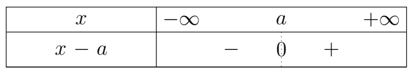
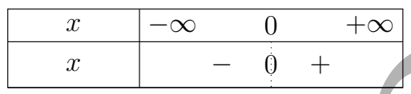
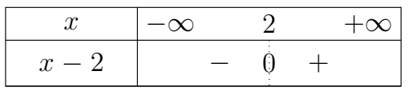
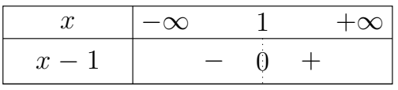
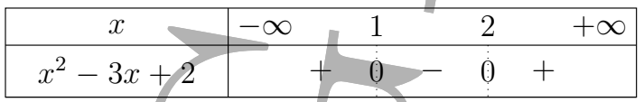

INTRODUCTION
La courbe ci-dessous représente une fonction \( f : x \mapsto f(x) \).
Considérons la fonction \( f \) représentée ci-dessus et posons-nous les questions suivantes :
- Que devient \( f(x) \) lorsque la variable \( x \) s'éloigne vers \( +\infty \) ?
- Que devient \( f(x) \) lorsque la variable \( x \) se rapproche de \( 0 \) ?
C'est en essayant de répondre à ce type de question que la notion de limite a été définie.
Ainsi, si on observe la courbe de \( f \), on voit que lorsque \( x \) s'éloigne vers \( +\infty \), \( f(x) \) se rapproche de \( 0 \) ;
on dit que la limite lorsque \( x \) tend vers \( +\infty \) de \( f \) est égale à \( 0 \).
De même, si on observe la courbe, on voit que lorsque \( x \) se rapproche de \( 0 \) tout en restant à droite de \( 0 \), \( f(x) \) tend vers \( +\infty \) ;
on dit que la limite à droite de \( 0 \) de \( f \) est égale à \( +\infty \).
I. Notion de limite
-
Approche intuitive de la notion de limite
On considère les fonctions \(f\) et \(g\), représentées ci-dessous, définies par : \(f(x)=x^2\) et \(g(x)=\dfrac{1}{x}\). Observons leurs comportements lorsque \(x\) tend vers \(+\infty\).
\(x\) \(10\) \(10^2\) \(10^3\) \(10^5\) \(f(x)\) \(10^2\) \(10^4\) \(10^6\) \(10^{10}\) \(x\) \(10\) \(10^2\) \(10^3\) \(10^5\) \(g(x)\) \(0.1\) \(0.01\) \(0.001\) \(0.00001\) Représentation graphique de f. Représentation graphique de g. Questions
Considérons les fonctions \(f\) et \(g\) représentées ci-dessus et posons-nous les questions suivantes :
- Que devient \(f(x)\) lorsque la variable \(x\) s'éloigne vers \(+\infty\) ?
- Que devient \(g(x)\) lorsque la variable \(x\) s'éloigne vers \(+\infty\) ?
C'est en essayant de répondre à ce type de question que la notion de limite a été définie.
Reponses
Ainsi,-
si on observe la courbe de \(f\), on voit que lorsque \(x\) s'éloigne vers \(+\infty\), \(f(x)\) devient de plus en plus grand ;
on dit que la limite lorsque \(x\) tend vers \(+\infty\) de \(f\) est égale à \(+\infty\).
-
De même, si on observe la courbe de \(g\), on voit que lorsque \(x\) s'éloigne vers \(+\infty\), \(g(x)\) se rapproche de \(0\) ;
on dit que la limite lorsque \(x\) tend vers \(+\infty\) de \(g\) est égale à \(0\).
On peut donc écrire :
\(\displaystyle \lim_{x\to+\infty} f(x)=+\infty \qquad\text{et}\qquad \lim_{x\to+\infty} g(x)=0. \)
Interprétation
La limite permet de décrire le comportement d'une fonction lorsque la variable se rapproche d'une valeur donnée ou s'éloigne vers l'infini.
Théorème de l'unicité de la limite
Soit \(f\) une fonction.
Si \(f\) admet une limite en un point \(x_0\), en \(+\infty\) ou en \(-\infty\), alors cette limite est unique.
-
Limites à l'infini des fonctions usuelles
Propriété
Soient \(a \in \mathbb{R}\) et \(n \in \mathbb{N}\setminus\{0\}\), on a :
\(1)\quad \displaystyle \lim_{x\to+\infty} a=a\)\(2)\quad \displaystyle \lim_{x\to+\infty} x^n=+\infty\)\(3)\quad \displaystyle \lim_{x\to+\infty}\frac{1}{x^n}=0\)\(4)\quad \displaystyle \lim_{x\to-\infty} a=a\)\(5)\quad \displaystyle \lim_{x\to-\infty}x^n= \begin{cases} +\infty & \text{si \(n\) est pair},\\ -\infty & \text{si \(n\) est impair} \end{cases}\)\( 6)\quad \displaystyle \lim_{x\to-\infty}\frac{1}{x^n}=0 \)Exemple 1
1) \(\displaystyle \lim_{x\to+\infty} 2=2\)2) \(\displaystyle \lim_{x\to+\infty} x=+\infty\)3) \(\displaystyle \lim_{x\to-\infty} x=-\infty\)4) \(\displaystyle \lim_{x\to-\infty} 3=3\)5) \(\displaystyle \lim_{x\to-\infty}x^2=+\infty\)6) \(\displaystyle \lim_{x\to+\infty}x^2=+\infty\)7) \(\displaystyle \lim_{x\to-\infty}x^3=-\infty\)8) \(\displaystyle \lim_{x\to+\infty}x^3=+\infty\)9) \(\displaystyle \lim_{x\to+\infty}\frac{1}{x^2}=0\) -
Limites à l'infini de : $x \mapsto ax^n$ avec $a \in \mathbb{R}\setminus\{0\}$ et $n \in \mathbb{N}\setminus\{0\}$
Pour calculer la limite à l'infini d'une fonction du type \(x \mapsto ax^n\), on fait le produit du réel \(a\) et du résultat de la limite à l'infini de \(x^n\).
Puis on applique les résultats ci-dessous :
- Si \(a>0\), alors on a : \(\langle a(+\infty)\rangle=+\infty\) et \(\langle a(-\infty)\rangle=-\infty\).
- Si \(a<0\), alors on a : \(\langle a(+\infty)\rangle=-\infty\) et \(\langle a(-\infty)\rangle=+\infty\).
Exemple 2
Calculons les limites suivantes :
1) \(\displaystyle \lim_{x\to+\infty} -3x\)2) \(\displaystyle \lim_{x\to-\infty} -2x^2\)3) \(\displaystyle \lim_{x\to-\infty} -3x^3\)4) \(\displaystyle \lim_{x\to-\infty} 4x^5\)Solution 2
1) \(\displaystyle \lim_{x\to+\infty} -3x=-\infty\)2) \(\displaystyle \lim_{x\to-\infty} -2x^2=-\infty\)3) \(\displaystyle \lim_{x\to-\infty} -3x^3=+\infty\)4) \(\displaystyle \lim_{x\to-\infty} 4x^5=-\infty\)Exercice 2
Calculer les limites suivantes :
1) \(\displaystyle \lim_{x\to+\infty} 2x^3\)2) \(\displaystyle \lim_{x\to+\infty} -5x^4\)3) \(\displaystyle \lim_{x\to-\infty} 5x^2\)4) \(\displaystyle \lim_{x\to-\infty} -3x^2\)5) \(\displaystyle \lim_{x\to-\infty} -x^4\)6) \(\displaystyle \lim_{x\to+\infty} -2x^5\)7) \(\displaystyle \lim_{x\to-\infty} -8x^3\)8) \(\displaystyle \lim_{x\to+\infty} -x^3\)9) \(\displaystyle \lim_{x\to+\infty} -4x^3\)Correction 2
1) \(\displaystyle \lim_{x\to+\infty}2x^3=+\infty\)2) \(\displaystyle \lim_{x\to+\infty}-5x^4=-\infty\)3) \(\displaystyle \lim_{x\to-\infty}5x^2=+\infty\)4) \(\displaystyle \lim_{x\to-\infty}-3x^2=-\infty\)5) \(\displaystyle \lim_{x\to-\infty}-x^4=-\infty\)6) \(\displaystyle \lim_{x\to+\infty}-2x^5=-\infty\)7) \(\displaystyle \lim_{x\to-\infty}-8x^3=+\infty\)8) \(\displaystyle \lim_{x\to+\infty}-x^3=-\infty\)9) \(\displaystyle \lim_{x\to+\infty}-4x^3=-\infty\) -
Limite en un point
Pour calculer la limite en un point $x_0$ d'une fonction $f$, on remplace $x_0$ par $x$ sur l'expression de $f$.
Exemple 3
Calculer les limites suivantes :
1) \( \displaystyle \lim_{x \to 2} x^2 - 3x \)2) \( \displaystyle \lim_{x\to 0} \dfrac{x+2}{x-1} \)Solution 3
1)
\(\begin{aligned} \displaystyle \lim_{x \to 2} x^2 - 3x &= (2)^2 - 3(2) \\ &= 4 - 6 \\ &= -2 \\ \end{aligned}\)
$\boxed{\lim_{x \to 2} x^2 - 3x = -2}$2)
\(\displaystyle \begin{aligned} \displaystyle \lim_{x \to 0} \dfrac{x+2}{x-1} = \dfrac{0+2}{0-1} &= \dfrac{2}{-1} = -2 \\ &= -2 \\ \end{aligned}\)
$ \boxed{\lim_{x \to 0} \frac{x+2}{x-1} = -2} $Exercice 3
Calculer les limites suivantes :
1) \( \displaystyle \lim_{x \to 0} -3x^2 + 3x - 1 \)2) \( \displaystyle \lim_{x \to -2} |x + 1| \)3) \( \displaystyle \lim_{x \to 1} \sqrt{x - 1} \)4) \( \displaystyle \lim_{x \to 2} \frac{x - 2}{x - 1} \)Correction 3
1)
-
Limites à gauche et à droite en un point $x_0$
-
Limite à gauche
Soit $f$ une fonction et $x_0 \in \mathbb{R}$.
On appelle limite à gauche en $x_0$ de $f$, la limite de $f$ lorsque $x$ tend vers $x_0$, en restant à gauche de $x_0$.
On la note : \(\displaystyle \lim_{x \to x_0^-} f(x) \quad \text{ou} \quad \lim_{\substack{x \to x_0 \\ x < x_0}} f(x) \)
-
Limite à droite
Soit $f$ une fonction et $x_0 \in \mathbb{R}$.
On appelle limite à droite en $x_0$ de $f$, la limite de $f$ lorsque $x$ tend vers $x_0$, en restant à droite de $x_0$.
On la note :\(\displaystyle \lim_{x \to x_0^+} f(x) \quad \text{ou} \quad \lim_{\substack{x \to x_0 \\ x > x_0}} f(x) \)
Exemple 4
Soit $f$ la fonction définie par :
\( \displaystyle f(x) = \begin{cases} 2x - 1 & \text{si } x > 1 \\ x^2 + x + 1 & \text{si } x \leq 1 \end{cases} \)
Calculons les limites en $1^-$ et en $1^+$ de $f$.
Solution 4
.
\( \begin{aligned} \displaystyle \lim_{x \to 1^-} f(x) &= \lim_{x \to 1^-} x^2 + x + 1 \\ &= (1)^2 + (1) + 1 \\ &= 3 \end{aligned} \)
$\boxed{\lim_{x \to 1^-} f(x) = 3}$.
\( \displaystyle \begin{aligned} \displaystyle \lim_{x \to 1^+} f(x) &= \lim_{x \to 1^+} 2x - 1 \\ &= 2(1) - 1 \\ &= 1 \end{aligned} \)
$ \boxed{\lim_{x \to 1^+} f(x) = 1}$Propriété
Pour tout réel $a$, on a :
$\displaystyle \lim_{x \to a^+} \frac{1}{x - a} = +\infty \quad ; \quad \lim_{x \to a^-} \frac{1}{x - a} = -\infty $

Explication :
Le tableau de signes de l'expression \(x-a\) permet de déterminer si le dénominateur tend vers \(0\) par valeurs positives \((0^+)\) ou par valeurs négatives \((0^-)\) :-
Limite à droite \( (x\to a^+) \) :
Lorsque \(x>a\) (à droite de \(a\)), le tableau indique que
\(x-a\) est positif \((+)\).
Le dénominateur tend donc vers \(0\) par valeurs supérieures,
soit \(0^+\).
Par règle des signes : \(\displaystyle \lim_{x\to a^+}\dfrac{1}{x-a} = \dfrac{1}{0^+} = +\infty \)
-
Limite à gauche \( (x\to a^-) \) :
Lorsque \( x < a \) (à gauche de \(a\)), le tableau indique que \(x-a\) est
négatif \((-)\).
Le dénominateur tend donc vers \(0\) par valeurs inférieures,
soit \(0^-\).
Par règle des signes : \(\displaystyle \lim_{x\to a^-}\dfrac{1}{x-a} = \dfrac{1}{0^-} = -\infty \)
Exemple 5
1. Limites de $\dfrac{1}{x}$ en $0$ :

-
À droite ($x \to 0^+$) : d'après le tableau, pour $x > 0$, le dénominateur est positif ($+$).
Donc $x \to 0^+$.
$\displaystyle \lim_{x \to 0^+} \frac{1}{x} = \frac{1}{0^+} = +\infty$
-
À gauche ($x \to 0^-$) : d'après le tableau, pour $x < 0$, le dénominateur est négatif ($-$).
Donc $x \to 0^-$.
$\displaystyle \lim_{x \to 0^-} \frac{1}{x} = \frac{1}{0^-} = -\infty$
2. Limites de $\dfrac{1}{x-2}$ en $2$ :

-
À droite ($x \to 2^+$) : d'après le tableau, pour $x > 2$, l'expression $x - 2$ est positive ($+$).
Le dénominateur tend vers $0^+$.
$\displaystyle \lim\limits_{x \to 2^+} \frac{1}{x - 2} = \frac{1}{0^+} = +\infty$ -
À gauche ($x \to 2^-$) : d'après le tableau, pour $x < 2$, l'expression $x - 2$ est négative ($-$).
Le dénominateur tend vers $0^-$.
$\displaystyle \lim_{x \to 2^-} \frac{1}{x - 2} = \frac{1}{0^-} = -\infty$
Exercice
-
-
Existence de la limite d'une fonction en un point $x_0$
Propriété
Soit $f$ une fonction et $x_0 \in \mathbb{R}$. La fonction $f$ admet une limite $l$ en $x_0$ si et seulement si on a :
\(\displaystyle \lim\limits_{x \to x_0^+} f(x) = \lim_{x \to x_0^-} f(x) = l \)
Méthode
Pour déterminer si une fonction $f$ admet ou non une limite en un point $x_0$, on calcule la limite à gauche en $x_0$ et la limite à droite en $x_0$ de $f$, puis on compare les résultats.
-
Si $\displaystyle \lim_{x \to x_0^+} f(x) = \lim_{x \to x_0^-} f(x)$, alors $f$ admet une limite $l$ en $x_0$ vérifiant :
\(\displaystyle l = \lim\limits_{x \to x_0^+} f(x) = \lim\limits_{x \to x_0^-} f(x).\)
-
Si $\displaystyle \lim_{x \to x_0^+} f(x) \neq \lim_{x \to x_0^-} f(x)$, alors $f$ n'admet pas de limite en $x_0$.
Exemple 6
1. Soit $f$ la fonction définie par :
\( \displaystyle \begin{cases} f(x) = x - 1 & \text{si } x > 0 \\ f(x) = x^2 + 1 & \text{si } x \leq 0 \end{cases} \)
La fonction $f$ admet-elle une limite en $0$ ?
2. Soit $g$ la fonction définie par :
\( \displaystyle \begin{cases} g(x) = x - 1 & \text{si } x > 1 \\ g(x) = x^2 + x - 2 & \text{si } x \leq 1 \end{cases} \)
La fonction $g$ admet-elle une limite en $1$ ?
Solution 6
1. Soit $f$ la fonction définie par :
\( \displaystyle \begin{cases} f(x) = x - 1 & \text{si } x > 0 \\ f(x) = x^2 + 1 & \text{si } x \leq 0 \end{cases} \)
On a :
- $\displaystyle \lim_{x \to 0^-} f(x) = \lim_{x \to 0^-} x^2 + 1 = (0)^2 + 1 = 1$
- $\displaystyle \lim_{x \to 0^+} f(x) = \lim_{x \to 0^+} x - 1 = (0) - 1 = -1$
Ainsi, $\displaystyle \lim_{x \to 0^+} f(x) \neq \lim_{x \to 0^-} f(x)$, donc $f$ n'admet pas de limite en $0$.
2. Soit $g$ la fonction définie par :
$\begin{cases} g(x) = x - 1 & \text{si } x > 1 \\ g(x) = x^2 + x - 2 & \text{si } x \leq 1 \end{cases}.$
- $\displaystyle \lim_{x \to 1^-} g(x) = \lim_{x \to 1^-} x^2 + x - 2 = (1)^2 + (1) - 2 = 0$
- $\displaystyle \lim_{x \to 1^+} g(x) = \lim_{x \to 1^+} x - 1 = (1) - 1 = 0$
Ainsi, $\displaystyle \lim_{x \to 1^+} g(x) = \lim_{x \to 1^-} g(x) = 0$, d'où $g$ admet une limite en $1$ et on a :
\(\displaystyle \lim_{x \to 1} g(x) = 0. \)
Exercice 6
Pour chacune des fonctions suivantes, déterminer si elle admet ou non une limite en $x_0$.
1) \( \displaystyle \begin{cases} f(x) = \sqrt{x - 1} & \text{si } x > 1 \\ f(x) = \dfrac{x - 1}{x + 3} & \text{si } x \leq 1 \end{cases} \quad ; \quad x_0 = 1 \)2) \( \displaystyle \begin{cases} g(x) = |x - 3| & \text{si } x > 2 \\ g(x) = 2x - 3 & \text{si } x \leq 2 \end{cases} \quad ; \quad x_0 = 2 \)3) \( \displaystyle \begin{cases} h(x) = x - 1 & \text{si } x > 0 \\ h(x) = x^2 + x - 2 & \text{si } x \leq 0 \end{cases} \quad ; \quad x_0 = 0 \)4) \( \displaystyle \begin{cases} i(x) = \sqrt{x^2 + 1} & \text{si } x > 1 \\ i(x) = \dfrac{2x - 1}{x + 3} & \text{si } x \leq 1 \end{cases} \quad ; \quad x_0 = 0 \)Correction 6
1)
-
II. Limites et opérations sur les fonctions
- Les propriétés suivantes, représentées sous forme de tableaux donnent les limites en un point $x_0$. Toutefois les résultats restent vrais en $+\infty$, $-\infty$, et en $x_0$ par valeurs supérieures ou inférieures.
- La notation $F.I$ ( Forme indéterminée ) veut dire qu'on ne peut conclure directement ; il faudra dans ces cas procéder à d'autre méthodes pour lever l'indétermination.
-
Limite d'une somme de deux fonctions
Propriété
Soit $x_0 \in \mathbb{R}$, $f$ et $g$ deux fonctions dont chacune admet une limite en $x_0$. Le tableau suivant donne les limites en $x_0$ de la fonction $f + g$
$$\lim_{x \to x_0} f(x)$$ $$l$$ $$+\infty$$ $$-\infty$$ $$-\infty$$ $$+\infty$$ $$+\infty$$ $$\lim_{x \to x_0} g(x)$$ $$l'$$ $$l'$$ $$l'$$ $$-\infty$$ $$+\infty$$ $$-\infty$$ $$\lim_{x \to x_0} (f(x) + g(x))$$ $$l + l'$$ $$+\infty$$ $$-\infty$$ $$-\infty$$ $$+\infty$$ $$F.I$$ Exemple 7
1.Soit $f$ la fonction définie par : $f(x) = 2x + \dfrac{1}{x}$.
Calculons $\displaystyle \lim_{x \to +\infty} f(x)$.
\( \lim\limits_{x \to +\infty} \left(2x + \dfrac{1}{x}\right) : \begin{cases} \displaystyle \lim_{x \to +\infty} 2x = +\infty \\ & \text{Par somme} \\ \displaystyle \lim\limits_{x \to +\infty} \dfrac{1}{x} = 0 \end{cases} \)$\boxed{\lim_{x \to +\infty} f(x) = +\infty}$
2.Soit $g$ la fonction définie par : $g(x) = -3x + \dfrac{1}{x - 1}$.
Calculons $\displaystyle \lim_{x \to 1^+} g(x)$.
\(\displaystyle \lim\limits_{x \to 1^+} \left(-3x + \dfrac{1}{x - 1}\right) : \begin{cases} \displaystyle \lim\limits_{x \to 1^+} -3x = -3 \\ & \text{Par somme} \\ \displaystyle \lim\limits_{x \to 1^+} \dfrac{1}{x - 1} = +\infty \end{cases}\)$\boxed{\lim\limits_{x \to 1^+} g(x) = +\infty}$
3.Soit $h$ la fonction définie par : $h(x) = x^3 + x^2$.
Calculons $\displaystyle \lim\limits_{x \to -\infty} h(x)$.
\(\displaystyle \lim\limits_{x \to -\infty} (x^3 + x^2) : \begin{cases} \displaystyle \lim\limits_{x \to -\infty} x^3 = -\infty \\ & \text{Par somme (F.I)} \\ \displaystyle \lim\limits_{x \to -\infty} x^2 = +\infty \end{cases}\)C'est une Forme Indéterminée (F.I) ; on ne peut pas conclure directement.
Exercice 7
Calculer les limites suivantes :
1)$\displaystyle \lim_{x \to +\infty} \left(-3x^2 + \frac{1}{x}\right)$ :
2)$\displaystyle \lim_{x \to 1^-} \left(2x + \frac{1}{x - 1}\right)$ :
3)$\displaystyle \lim_{x \to -\infty} (2x^2 - x)$ :
4)$\displaystyle \lim_{x \to +\infty} (x^2 + 3x - 1)$ :
Correction 7
1)Calculons $\displaystyle \lim\limits_{x \to +\infty} \left(-3x^2 + \frac{1}{x}\right)$ :
$\lim\limits_{x \to +\infty} \left(-3x^2 + \dfrac{1}{x}\right) : \begin{cases} \displaystyle \lim\limits_{x \to +\infty} -3x^2 = -\infty \\ & \text{Par somme} \\ \displaystyle \lim\limits_{x \to +\infty} \dfrac{1}{x} = 0 \end{cases}$$\boxed{\lim\limits_{x \to +\infty} \left(-3x^2 + \dfrac{1}{x}\right) = -\infty}$
2)Calculons $\displaystyle \lim\limits_{x \to 1^-} \left(2x + \dfrac{1}{x - 1}\right)$ :
$\lim\limits_{x \to 1^-} \left(2x + \dfrac{1}{x - 1}\right) : \begin{cases} \displaystyle \lim\limits_{x \to 1^-} 2x = 2 \\ & \text{Par somme} \\ \displaystyle \lim\limits_{x \to 1^-} \dfrac{1}{x - 1} = -\infty \end{cases}$$\boxed{\lim\limits_{x \to 1^-} \left(2x + \dfrac{1}{x - 1}\right) = -\infty}$
3)Calculons $\displaystyle \lim\limits_{x \to -\infty} (2x^2 - x)$ :
$ \lim_{x \to -\infty} (2x^2 - x) : \begin{cases} \displaystyle \lim\limits_{x \to -\infty} 2x^2 = +\infty \\ & \text{Par somme} \\ \displaystyle \lim\limits_{x \to -\infty} -x = +\infty \end{cases}$$\boxed{\lim\limits_{x \to -\infty} (2x^2 - x) = +\infty}$
4)Calculons $\displaystyle \lim\limits_{x \to +\infty} (x^2 + 3x - 1)$ :
$ \lim\limits_{x \to +\infty} (x^2 + 3x - 1) : \begin{cases} \displaystyle \lim\limits_{x \to +\infty} x^2 = +\infty \\ & \text{Par somme} \\ \displaystyle \lim\limits_{x \to +\infty} (3x - 1) = +\infty \end{cases}$$\boxed{\lim\limits_{x \to +\infty} (x^2 + 3x - 1) = +\infty}$
-
Limite du produit de deux fonctions
Propriété
Soit $x_0 \in \mathbb{R}$, $f$ et $g$ deux fonctions dont chacune admet une limite en $x_0$. Le tableau suivant donne les limites en $x_0$ de la fonction $fg$
$$\lim_{x \to x_0} f(x)$$ $$l$$ $$+\infty$$ $$-\infty$$ $$-\infty$$ $$+\infty$$ $$+\infty$$ $$\infty$$ $$\lim_{x \to x_0} g(x)$$ $$l'$$ $$l' \neq 0$$ $$l' \neq 0$$ $$-\infty$$ $$+\infty$$ $$-\infty$$ $$0$$ $$\lim_{x \to x_0} f(x)g(x)$$ $$ll'$$ $$\begin{array}{ccc} +\infty & \text{si} & l' > 0 \\ -\infty & \text{si} & l' < 0 \end{array}$$ $$\begin{array}{ccc} -\infty & \text{si} & l' > 0 \\ +\infty & \text{si} & l' < 0 \end{array}$$ $$+\infty$$ $$+\infty$$ $$-\infty$$ $$F.I$$ Exemple 8
1.Soit $f$ la fonction définie par : $f(x) = -2x^2$.
Calculons $\displaystyle \lim\limits_{x \to +\infty} f(x)$.
$ \lim\limits_{x \to +\infty} (-2x^2) : \begin{cases} \displaystyle \lim\limits_{x \to +\infty} -2 = -2 \\ & \text{Par produit} \\ \displaystyle \lim\limits_{x \to +\infty} x^2 = +\infty \end{cases}$$\boxed{\lim\limits_{x \to +\infty} f(x) = -\infty}$
2.Soit $g$ la fonction définie par : $g(x) = x \left(-3 + \dfrac{1}{x}\right)$.
Calculons $\displaystyle \lim\limits_{x \to -\infty} g(x)$.
$ \lim\limits_{x \to -\infty} x \left(-3 + \frac{1}{x}\right) : \begin{cases} \displaystyle \lim\limits_{x \to -\infty} x = -\infty \\ & \text{Par produit} \\ \displaystyle \lim\limits_{x \to -\infty} \left(-3 + \frac{1}{x}\right) = -3 \end{cases}$$\boxed{\lim\limits_{x \to -\infty} g(x) = +\infty}$
3.Soit $h$ la fonction définie par : $h(x) = (x - 1) \left(1 + \dfrac{1}{x - 1}\right)$.
Calculons $\displaystyle \lim\limits_{x \to 1^-} h(x)$.
$\lim\limits_{x \to 1^-} (x - 1) \left(1 + \frac{1}{x - 1}\right) : \begin{cases} \displaystyle \lim\limits_{x \to 1^-} (x - 1) = 0 \\ & \text{Par produit (F.I)} \\ \displaystyle \lim\limits_{x \to 1^-} \left(1 + \frac{1}{x - 1}\right) = -\infty \end{cases}$C'est une Forme Indéterminée (F.I) ; on ne peut pas conclure directement.
Exercice 8
Calculer les limites suivantes :
1)$\displaystyle \lim\limits_{x \to 1} (x + 1)(x - 3)$ :
2)$\displaystyle \lim\limits_{x \to +\infty} x^2(1 - x)$ :
3)$\displaystyle \lim\limits_{x \to 1^+} \left(\frac{1}{x - 1}\right)(1 - x^2)$ :
4)$\displaystyle \lim\limits_{x \to 2} -3x^2 \left(\frac{1}{x} - 1\right)$ :
Correction 8
1)Calculons $\displaystyle \lim\limits_{x \to 1} (x + 1)(x - 3)$ :
$ \lim\limits_{x \to 1} (x + 1)(x - 3) : \begin{cases} \displaystyle \lim\limits_{x \to 1} (x + 1) = 2 \\ & \text{Par produit} \\ \displaystyle \lim\limits_{x \to 1} (x - 3) = -2 \end{cases}$$\boxed{\lim\limits_{x \to 1} (x + 1)(x - 3) = -4}$
2)Calculons $\displaystyle \lim\limits_{x \to +\infty} x^2(1 - x)$ :
$\lim\limits_{x \to +\infty} x^2(1 - x) : \begin{cases} \displaystyle \lim\limits_{x \to +\infty} x^2 = +\infty \\ & \text{Par produit} \\ \displaystyle \lim\limits_{x \to +\infty} (1 - x) = -\infty \end{cases}$$\boxed{\lim\limits_{x \to +\infty} x^2(1 - x) = -\infty}$
3)Calculons $\displaystyle \lim\limits_{x \to 1^+} \left(\frac{1}{x - 1}\right)(1 - x^2)$ :
$ \lim\limits_{x \to 1^+} \left(\frac{1}{x - 1}\right)(1 - x^2) : \begin{cases} \displaystyle \lim\limits_{x \to 1^+} \frac{1}{x - 1} = +\infty \\ & \text{Par produit (F.I)} \\ \displaystyle \lim\limits_{x \to 1^+} (1 - x^2) = 0 \end{cases}$C'est une Forme Indéterminée (F.I) ; on ne peut pas conclure directement.
4)Calculons $\displaystyle \lim\limits_{x \to 2} -3x^2 \left(\frac{1}{x} - 1\right)$ :
$ \lim\limits_{x \to 2} -3x^2 \left(\frac{1}{x} - 1\right) : \begin{cases} \displaystyle \lim\limits_{x \to 2} -3x^2 = -12 \\ & \text{Par produit} \\ \displaystyle \lim\limits_{x \to 2} \left(\frac{1}{x} - 1\right) = -\frac{1}{2} \end{cases}$$\boxed{\lim\limits_{x \to 2} -3x^2 \left(\frac{1}{x} - 1\right) = 6}$
-
Limite du quotient de deux fonctions
Propriété
Soit $x_0 \in \mathbb{R}$, $f$ et $g$ deux fonctions dont chacune admet une limite en $x_0$. Le tableau suivant donne les limites en $x_0$ de la fonction $\dfrac{f}{g}$
$$\lim\limits_{x \to x_0} f(x)$$ $$l$$ $$l$$ $$l > 0$$ $$l < 0$$ $$0$$ $$\pm\infty$$ $$\lim\limits_{x \to x_0} g(x)$$ $$l' \neq 0$$ $$\pm\infty$$ $$0$$ $$0$$ $$0$$ $$\pm\infty$$ $$\lim\limits_{x \to x_0} \frac{f(x)}{g(x)}$$ $$\dfrac{l}{l'}$$ $$0$$ $$\begin{array}{ccc} +\infty & \text{si} & g > 0 \\ -\infty & \text{si} & g < 0 \end{array}$$ $$\begin{array}{ccc} -\infty & \text{si} & g > 0 \\ +\infty & \text{si} & g < 0 \end{array}$$ $$F.I$$ $$F.I$$ Exemple 9
1.Soit \(l\) la fonction définie par :
$l(x)=\frac{x^2-1}{x^2-x+2}.$
Calculons \(\displaystyle\lim_{x\to1}l(x)\).
On a :
$ \lim\limits_{x\to1}\frac{x^2-1}{x^2-x+2} =\left\langle\frac{0}{0}\right\rangle$
est une forme indéterminée ; on ne peut conclure directement.
2.Soit \(f\) la fonction définie par :
$f(x)=\frac{x+3}{x-1}.$
Calculons \(\displaystyle\lim_{x\to1^+}f(x)\).
On a :
$ \lim\limits_{x\to1^+}f(x) = \lim\limits_{x\to1^+}\frac{x+3}{x-1} = \left\langle\frac{4}{0}\right\rangle.$
Étudions le signe de \(x-1\).
$x-1=0\quad\Longrightarrow\quad x=1$

\(x-1\) est positif à droite de \(1\). Donc
$ \lim\limits_{x\to1^+}f(x) = \left\langle\frac{4}{0^+}\right\rangle =+\infty.$
$\boxed{\displaystyle\lim_{x\to1^+}f(x)=+\infty}$
3.Soit \(g\) la fonction définie par :
$g(x)=\dfrac{x-5}{x^2-3x+2}.$
Calculons \(\displaystyle \lim\limits_{x\to2^-}g(x)\).
On a :
$ \lim\limits_{x\to2^-}g(x) = \lim\limits_{x\to2^-}\frac{x-5}{x^2-3x+2} = \left\langle\frac{-3}{0}\right\rangle.$
Étudions le signe de \(x^2-3x+2\).
$ x^2-3x+2=0 \quad\Longrightarrow\quad x=1\text{ ou }x=2$

\(x^2-3x+2\) est négatif à gauche de \(2\).
Donc,
$ \lim\limits_{x\to2^-}g(x) = \left\langle\frac{-3}{0^-}\right\rangle =+\infty.$
$\boxed{\displaystyle\lim\limits_{x\to2^-}g(x)=+\infty}$
4.Soit \(h\) la fonction définie par :
$h(x)=\frac{5}{x-1}.$
Calculons \(\displaystyle\lim\limits_{x\to-\infty}h(x)\).
On a :
$ \lim\limits_{x\to-\infty}h(x) = \lim\limits_{x\to-\infty}\frac{5}{x-1} = \left\langle\frac{5}{-\infty}\right\rangle =0.$
$\boxed{\displaystyle\lim\limits_{x\to-\infty}h(x)=0}$
Exercice 9
Calculer les limites suivantes :
1)$\displaystyle \lim\limits_{x \to 1} \dfrac{x^2 - 1}{x^2 + 2x - 3}$
2)$\displaystyle \lim\limits_{x \to 1^+} \dfrac{x - 3}{x - 1}$
3)$\displaystyle \lim\limits_{x \to +\infty} \dfrac{x + 1}{x - 1}$
4)$\displaystyle \lim\limits_{x \to 1} \dfrac{x^2 + 1}{x - 3}$
Correction 9
1)Calculons $\displaystyle \lim_{x \to 1} \dfrac{x^2 - 1}{x^2 + 2x - 3}$ :
$ \lim_{x \to 1} \frac{x^2 - 1}{x^2 + 2x - 3} : \begin{cases} \displaystyle \lim_{x \to 1} (x^2 - 1) = 0 \\ & \text{Par quotient (F.I)} \\ \displaystyle \lim_{x \to 1} (x^2 + 2x - 3) = 0 \end{cases}$C'est une Forme Indéterminée (F.I) ; on ne peut pas conclure directement.
2)Calculons $\displaystyle \lim\limits_{x \to 1^+} \dfrac{x - 3}{x - 1}$ :
Étudions le signe de $x - 1$.
$x - 1 = 0 \implies x = 1$
$ \lim\limits_{x \to 1^+} \dfrac{x - 3}{x - 1} : \begin{cases} \displaystyle \lim\limits_{x \to 1^+} (x - 3) = -2 \\ & \text{Par quotient} \\ \displaystyle \lim\limits_{x \to 1^+} (x - 1) = 0^+ \end{cases}$$\boxed{\lim\limits_{x \to 1^+} \dfrac{x - 3}{x - 1} = -\infty}$
3)Calculons $\displaystyle \lim\limits_{x \to +\infty} \dfrac{x + 1}{x - 1}$ :
$ \lim\limits_{x \to +\infty} \dfrac{x + 1}{x - 1} : \begin{cases} \displaystyle \lim\limits_{x \to +\infty} (x + 1) = +\infty \\ & \text{Par quotient (F.I)} \\ \displaystyle \lim\limits_{x \to +\infty} (x - 1) = +\infty \end{cases}$C'est une Forme Indéterminée (F.I) ; on ne peut pas conclure directement.
4)Calculons $\displaystyle \lim\limits_{x \to 1} \dfrac{x^2 + 1}{x - 3}$ :
$ \lim\limits_{x \to 1} \dfrac{x^2 + 1}{x - 3} : \begin{cases} \displaystyle \lim\limits_{x \to 1} (x^2 + 1) = 2 \\ & \text{Par quotient} \\ \displaystyle \lim\limits_{x \to 1} (x - 3) = -2 \end{cases}$$\boxed{\lim\limits_{x \to 1} \dfrac{x^2 + 1}{x - 3} = -1}$
-
Limites de $\sqrt{u}$ et $|u|$
Propriété
Soit $u$ une fonction positive et $x_0$ un réel.
- Si $\displaystyle \lim\limits_{x \to x_0} u = l$, alors $\displaystyle \lim\limits_{x \to x_0} \sqrt{u} = \sqrt{l}$
- Si $\displaystyle \lim\limits_{x \to x_0} u = +\infty$, alors $\displaystyle \lim\limits_{x \to x_0} \sqrt{u} = +\infty$
Exemple 10
1.Soit $g$ la fonction définie par : $g(x) = \sqrt{x + 3}$. Calculons $\displaystyle \lim\limits_{x \to 1} g(x)$.
On a : $\displaystyle \lim\limits_{x \to 1} x + 3 = 4$ donc $\displaystyle \lim\limits_{x \to 1} g(x) = \sqrt{4} = 2$.
$\boxed{\lim\limits_{x \to 1} g(x) = 2}$
2.Soit $f$ la fonction définie par : $f(x) = \sqrt{x + 1}$. Calculons $\displaystyle \lim\limits_{x \to +\infty} f(x)$.
On a : $\displaystyle \lim\limits_{x \to +\infty} x + 1 = +\infty$ donc $\displaystyle \lim\limits_{x \to +\infty} f(x) = +\infty$.
$\boxed{\lim\limits_{x \to +\infty} f(x) = +\infty}$
Exercice 10
Calculer les limites suivantes :
1)$\displaystyle \lim\limits_{x \to -\infty} \sqrt{x^2 + 1}$ :
2)$\displaystyle \lim\limits_{x \to 1} \sqrt{x - 1}$ :
3)$\displaystyle \lim\limits_{x \to 2} |x - 3|$ :
4)$\displaystyle \lim\limits_{x \to +\infty} |1 - x|$ :
Correction 10
1)Calculons $\displaystyle \lim\limits_{x \to -\infty} \sqrt{x^2 + 1}$ :
On a : $\displaystyle \lim\limits_{x \to -\infty} (x^2 + 1) = +\infty$ donc $\displaystyle \lim\limits_{x \to -\infty} \sqrt{x^2 + 1} = +\infty$.
$\boxed{\lim\limits_{x \to -\infty} \sqrt{x^2 + 1} = +\infty}$
2)Calculons $\displaystyle \lim\limits_{x \to 1} \sqrt{x - 1}$ :
On a : $\displaystyle \lim\limits_{x \to 1} (x - 1) = 0$
Donc $\displaystyle \lim\limits_{x \to 1} \sqrt{x - 1} = 0$
$\boxed{\lim\limits_{x \to 1} \sqrt{x - 1} = 0}$
3)Calculons $\displaystyle \lim\limits_{x \to 2} |x - 3|$ :
On a : $\displaystyle \lim\limits_{x \to 2} (x - 3) = -1$
donc $\displaystyle \lim\limits_{x \to 2} |x - 3| = |-1| = 1$.
$\boxed{\lim\limits_{x \to 2} |x - 3| = 1}$
4)Calculons $\displaystyle \lim\limits_{x \to +\infty} |1 - x|$ :
On a : $\displaystyle \lim\limits_{x \to +\infty} (1 - x) = -\infty$
donc $\displaystyle \lim\limits_{x \to +\infty} |1 - x| = +\infty$.
$\boxed{\lim\limits_{x \to +\infty} |1 - x| = +\infty}$
III. Calculs de limites de certaines fonctions
-
Limites à l'infini des fonctions polynômes
Propriété
La limite à l'infini d'une fonction polynôme est égale à la limite de son monôme du plus haut degré.
En effet, on a $f(x) = a_n x^n + a_{n-1} x^{n-1} + \dots + a_0$, avec $a_n$, $a_{n-1}$, \dots, $a_0$ des réels tels que $a_n \neq 0$.
$\begin{aligned} \lim_{x \to \pm\infty} f(x) &= \lim_{x \to \pm\infty} (a_n x^n + a_{n-1} x^{n-1} + \dots + a_0) \\ &= \lim_{x \to \pm\infty} a_n x^n \left(1 + \frac{a_{n-1}}{a_n x} + \dots + \frac{a_0}{a_n x^n}\right) \\ &= \lim_{x \to \pm\infty} a_n x^n \times \lim_{x \to \pm\infty} \left(1 + \frac{a_{n-1}}{a_n x} + \dots + \frac{a_0}{a_n x^n}\right) \\ &= \lim_{x \to \pm\infty} a_n x^n \quad \text{car} \quad \lim_{x \to \pm\infty} \left(1 + \frac{a_{n-1}}{a_n x} + \dots + \frac{a_0}{a_n x^n}\right)\\ &= 1 \end{aligned}$Donc $\displaystyle \lim_{x \to \pm\infty} f(x) = \lim_{x \to \pm\infty} a_n x^n$.
Méthode
Pour calculer la limite à l'infini d'une fonction polynôme, il suffit de calculer la limite de son monôme du plus haut degré.
Exemple 11
Calculons les limites suivantes
1.
$\begin{aligned}[t] \lim_{x \to -\infty} (-2x^3 + 4x^2 + 6x - 1) &= \lim_{x \to -\infty} -2x^3 \\ &= -2(-\infty)\\ &= +\infty \end{aligned}$$\boxed{\lim_{x \to -\infty} (-2x^3 + 4x^2 + 6x - 1) = +\infty}$
2.
$\begin{aligned}[t] \lim_{x \to +\infty} (4x^4 + x^3 + x - 1) &= \lim_{x \to +\infty} 4x^4 \\ &= 4(+\infty)\\ &= +\infty \end{aligned}$$\boxed{\lim_{x \to +\infty} (4x^4 + x^3 + x - 1) = +\infty}$
Exercice 11
Calculer les limites suivantes :
1)$\lim\limits_{x \to -\infty} (3x^3 + 2x^2 - 1)$
2)$\lim\limits_{x \to +\infty} (-2x^2 + x - 4)$
3)$\lim\limits_{x \to -\infty} (-x^3 + x + 2)$
4)$\lim\limits_{x \to +\infty} (5x^3 + 3x - 4)$
Correction 11
1)
$\begin{aligned}[t] \lim_{x \to -\infty} (3x^3 + 2x^2 - 1) &= \lim_{x \to -\infty} 3x^3 \\ &= 3(-\infty) \\ &= -\infty \end{aligned}$$\boxed{\lim_{x \to -\infty} (3x^3 + 2x^2 - 1) = -\infty}$
2)
$\begin{aligned}[t] \lim_{x \to +\infty} (-2x^2 + x - 4) &= \lim_{x \to +\infty} -2x^2 \\ &= -2(+\infty) \\ &= -\infty \end{aligned}$$\boxed{\lim_{x \to +\infty} (-2x^2 + x - 4) = -\infty}$
3)
$\begin{aligned}[t] \lim_{x \to -\infty} (-x^3 + x + 2) &= \lim_{x \to -\infty} -x^3 \\ &= -(-\infty) \\ &= +\infty \end{aligned}$$\boxed{\lim_{x \to -\infty} (-x^3 + x + 2) = +\infty}$
4)
$\begin{aligned}[t] \lim_{x \to +\infty} (5x^3 + 3x - 4) &= \lim_{x \to +\infty} 5x^3 \\ &= 5(+\infty) \\ &= +\infty \end{aligned}$$\boxed{\lim_{x \to +\infty} (5x^3 + 3x - 4) = +\infty}$
-
Limites à l'infini des fonctions rationnelles
Propriété
La limite à l'infini d'une fonction rationnelle est égale à la limite du quotient des monômes du plus haut degré du numérateur et du dénominateur.
En effet :
Soit $f$ une fonction rationnelle définie par : $f(x) = \dfrac{a_n x^n + a_{n-1} x^{n-1} + \dots + a_0}{b_m x^m + b_{m-1} x^{m-1} + \dots + b_0}$ avec $a_n \neq 0$ et $b_m \neq 0$. On a :
$\begin{aligned} \lim_{x \to \pm\infty} f(x) &= \lim_{x \to \pm\infty} \frac{a_n x^n + a_{n-1} x^{n-1} + \dots + a_0}{b_m x^m + b_{m-1} x^{m-1} + \dots + b_0} \\ &= \lim_{x \to \pm\infty} \frac{a_n x^n \left(1 + \dfrac{a_{n-1}}{a_n x} + \dots + \dfrac{a_0}{a_n x^n}\right)}{b_m x^m \left(1 + \dfrac{b_{m-1}}{b_m x} + \dots + \dfrac{b_0}{b_m x^m}\right)} \\ &= \lim_{x \to \pm\infty} \frac{a_n x^n}{b_m x^m} \left( \frac{1 + \dfrac{a_{n-1}}{a_n x} + \dots + \dfrac{a_0}{a_n x^n}}{1 + \dfrac{b_{m-1}}{b_m x} + \dots + \dfrac{b_0}{b_m x^m}} \right) \\ &= \lim_{x \to \pm\infty} \frac{a_n x^n}{b_m x^m} \times \lim_{x \to \pm\infty} \left( \frac{1 + \dfrac{a_{n-1}}{a_n x} + \dots + \dfrac{a_0}{a_n x^n}}{1 + \dfrac{b_{m-1}}{b_m x} + \dots + \dfrac{b_0}{b_m x^m}} \right) \end{aligned}$Or $\displaystyle \lim_{x \to \pm\infty} \left( \frac{1 + \dfrac{a_{n-1}}{a_n x} + \dots + \dfrac{a_0}{a_n x^n}}{1 + \dfrac{b_{m-1}}{b_m x} + \dots + \dfrac{b_0}{b_m x^m}} \right) = 1$ donc $\displaystyle \lim_{x \to \pm\infty} f(x) = \lim_{x \to \pm\infty} \frac{a_n x^n}{b_m x^m}$.
Méthode
Pour calculer la limite à l'infini d'une fonction rationnelle, il suffit de calculer la limite du quotient des monômes du plus haut degré du numérateur et du dénominateur.
Exemple 12
Calculons les limites suivantes
1.
$\begin{aligned}[t] \lim\limits_{x \to -\infty} \dfrac{-2x^3 + x - 1}{x^2 - x + 2} &= \lim_{x \to -\infty} \dfrac{-2x^3}{x^2} \\ &= \lim\limits_{x \to -\infty} -2x \\ &= -2(-\infty) \\ &= +\infty \end{aligned}$$\boxed{\lim\limits_{x \to -\infty} \dfrac{-2x^3 + x - 1}{x^2 - x + 2} = +\infty}$
2.
$\begin{aligned}[t] \lim\limits_{x \to +\infty} \dfrac{x^3 + 4x^2 + 6x - 1}{2x^5 - 6x + 2} &= \lim_{x \to +\infty} \dfrac{x^3}{2x^5} \\ &= \lim\limits_{x \to +\infty} \dfrac{1}{2x^2} \\ &= 0 \end{aligned}$$\boxed{\lim\limits_{x \to +\infty} \dfrac{x^3 + 4x^2 + 6x - 1}{2x^5 - 6x + 2} = 0}$
3.
$\begin{aligned}[t] \lim\limits_{x \to +\infty} \dfrac{4x^2 - 2x - 3}{2x^2 - x - 5} &= \lim_{x \to +\infty} \dfrac{4x^2}{2x^2} \\ &= 2 \end{aligned}$$\boxed{\lim\limits_{x \to +\infty} \dfrac{4x^2 - 2x - 3}{2x^2 - x - 5} = 2}$
Exercice 12
Calculer les limites suivantes :
1)$\lim\limits_{x \to -\infty} \dfrac{2x^2 + x + 1}{x - 1}$
2)$\lim\limits_{x \to +\infty} \dfrac{x + 1}{x^2 + x - 1}$
3)$\lim\limits_{x \to -\infty} \dfrac{x + 1}{x - 1}$
4)$\lim\limits_{x \to +\infty} \dfrac{2x^2 + x + 1}{-4x^2 - 1}$
Correction 12
1)
$\begin{aligned}[t] \lim_{x \to -\infty} \frac{2x^2 + x + 1}{x - 1} &= \lim_{x \to -\infty} \frac{2x^2}{x} \\ &= \lim_{x \to -\infty} 2x \\ &= 2(-\infty) \\ &= -\infty \end{aligned}$$\boxed{\lim_{x \to -\infty} \frac{2x^2 + x + 1}{x - 1} = -\infty}$
2)
$\begin{aligned}[t] \lim_{x \to +\infty} \frac{x + 1}{x^2 + x - 1} &= \lim_{x \to +\infty} \frac{x}{x^2} \\ &= \lim_{x \to +\infty} \frac{1}{x} \\ &= 0 \end{aligned}$$\boxed{\lim_{x \to +\infty} \frac{x + 1}{x^2 + x - 1} = 0}$
3)
$\begin{aligned}[t] \lim_{x \to -\infty} \frac{x + 1}{x - 1} &= \lim_{x \to -\infty} \frac{x}{x} \\ &= 1 \end{aligned}$$\boxed{\lim_{x \to -\infty} \frac{x + 1}{x - 1} = 1}$
4)
$\begin{aligned}[t] \lim_{x \to +\infty} \frac{2x^2 + x + 1}{-4x^2 - 1} &= \lim_{x \to +\infty} \frac{2x^2}{-4x^2} \\ &= -\frac{2}{4} \\ &= -\frac{1}{2} \end{aligned}$$\boxed{\lim_{x \to +\infty} \frac{2x^2 + x + 1}{-4x^2 - 1} = -\frac{1}{2}}$
-
Limite en $x_0$ de $\dfrac{u(x)}{v(x)}$ avec $u(x_0)=v(x_0)=0$
Méthode
Pour calculer la limite en un point $x_0$ d'une fonction du type : $f = \dfrac{u}{v}$ où $u(x_0) = v(x_0) = 0$, on cherche, d'abord, à mettre en facteur $(x - x_0)$ au numérateur et dénominateur, puis on simplifie $f(x)$.
Ensuite, on recalcule la limite de $f$ avec son expression simplifiée.
Exemple 13
1.Soit $f$ la fonction définie par $f(x) = \dfrac{x^2 + 6x - 7}{x^2 + 2x - 3}$.
Calculons $\displaystyle \lim_{x \to 1} f(x)$.
$ \displaystyle \lim_{x \to 1} f(x): \begin{cases} \displaystyle \lim_{x \to 1} (x^2 + 6x - 7) = 0\\[3mm] &\textit{donc le quotient est une forme indéterminée.}\\ \displaystyle \lim_{x \to 1} (x^2 + 2x - 3) = 0 \end{cases} $Levons l'indétermination :
Factorisons $ x^2 + 6x - 7 $ et $x^2 + 2x - 3 $
On a : $ x^2 + 6x - 7 = (x - 1)(x + 7)$ et $x^2 + 2x - 3 = (x - 1)(x + 3)$
$ \begin{aligned} \displaystyle \lim_{x \to 1} f(x) & =\displaystyle \lim_{x \to 1} \dfrac{x^2 + 6x - 7}{x^2 + 2x - 3}\\ &=\displaystyle \lim_{x \to 1} \dfrac{(x - 1)(x + 7)}{(x - 1)(x + 3)}\\ &=\displaystyle \lim_{x \to 1} \dfrac{x + 7}{x + 3}\\ &= \frac{1 + 7}{1 + 3}\\ &= 2 \end{aligned} $Donc, $\boxed{\lim_{x \to 1} f(x) = 2}$
2.Soit $g$ la fonction définie par $g(x) = \dfrac{\sqrt{x + 3} - 2}{x - 1}$.
Calculons $\displaystyle \lim_{x \to 1} g(x)$.
$ \displaystyle \lim_{x \to 1} g(x): \begin{cases} \displaystyle \lim_{x \to 1} (\sqrt{x + 3} - 2) = 0\\[3mm] &\textit{donc le quotient est une forme indéterminée.}\\ \displaystyle \lim_{x \to 1} (x - 1) = 0 \end{cases} $Levons l'indétermination :
Utilisons l'expression conjuguée du numérateur :
$ \begin{aligned} \displaystyle \lim_{x \to 1} g(x) &= \displaystyle \lim_{x \to 1} \dfrac{\sqrt{x + 3} - 2}{x - 1}\\ &= \displaystyle \lim_{x \to 1} \dfrac{(\sqrt{x + 3} - 2)(\sqrt{x + 3} + 2)}{(x - 1)(\sqrt{x + 3} + 2)}\\ &= \displaystyle \lim_{x \to 1} \dfrac{(\sqrt{x + 3})^2 - 2^2}{(x - 1)(\sqrt{x + 3} + 2)}\\ &= \displaystyle \lim_{x \to 1} \dfrac{x + 3 - 4}{(x - 1)(\sqrt{x + 3} + 2)}\\ &= \displaystyle \lim_{x \to 1} \dfrac{x - 1}{(x - 1)(\sqrt{x + 3} + 2)}\\ &= \displaystyle \lim_{x \to 1} \dfrac{1}{\sqrt{x + 3} + 2}\\ &= \frac{1}{\sqrt{1 + 3} + 2}\\ &= \frac{1}{4} \end{aligned} $Donc,$\boxed{\lim_{x \to 1} g(x) = \frac{1}{4}}$
3.Soit $h$ la fonction définie par : $h(x) = x^3 + x^2$.
Soit $h$ la fonction définie par $h(x) = \dfrac{x - 2}{\sqrt{x - 2}}$.
Calculons $\displaystyle \lim_{x \to 2^+} h(x)$.
$ \displaystyle \lim_{x \to 2^+} h(x): \begin{cases} \displaystyle \lim_{x \to 2^+} (x - 2) = 0\\[3mm] &\textit{donc le quotient est une forme indéterminée.}\\ \displaystyle \lim_{x \to 2^+} \sqrt{x - 2} = 0 \end{cases} $Levons l'indétermination :
Rendons rationnel le dénominateur :
$ \begin{aligned} \displaystyle \lim_{x \to 2^+} h(x) &= \displaystyle \lim_{x \to 2^+} \dfrac{x - 2}{\sqrt{x - 2}}\\ &= \displaystyle \lim_{x \to 2^+} \dfrac{(x - 2)\sqrt{x - 2}}{(\sqrt{x - 2})^2}\\ &= \displaystyle \lim_{x \to 2^+} \dfrac{(x - 2)\sqrt{x - 2}}{x - 2}\\ &= \displaystyle \lim_{x \to 2^+} \sqrt{x - 2}\\ &= 0 \end{aligned} $Donc, $\boxed{\lim_{x \to 2^+} h(x) = 0}$
Exercice 13
Calculer les limites suivantes :
1)$\displaystyle \lim_{x \to 2} \frac{x^2 - x - 2}{x^2 - 5x + 6}$
2)$\displaystyle \lim_{x \to 1} \frac{\sqrt{x + 3} - \sqrt{2x + 2}}{x - 1}$
3)$\displaystyle \lim_{x \to 0^+} \frac{x - \sqrt{x}}{x}$
4)$\displaystyle \lim_{x \to 4} \frac{\sqrt{x} - 2}{x - 4}$
Correction 13
1)
$ \displaystyle \lim_{x \to 2} \frac{x^2 - x - 2}{x^2 - 5x + 6}: \begin{cases} \displaystyle \lim_{x \to 2} (x^2 - x - 2) = 0\\[3mm] &\textit{donc le quotient est une F.I.}\\ \displaystyle \lim_{x \to 2} (x^2 - 5x + 6) = 0 \end{cases} $Levons l'indétermination :
Factorisons $x^2 - x - 2$ et $x^2 - 5x + 6$ :
On a : $x^2 - x - 2 = (x - 2)(x + 1)$ et $x^2 - 5x + 6 = (x - 2)(x - 3)$.
$ \begin{aligned} \displaystyle \lim_{x \to 2} \frac{x^2 - x - 2}{x^2 - 5x + 6} &= \displaystyle \lim_{x \to 2} \frac{(x - 2)(x + 1)}{(x - 2)(x - 3)}\\ &= \displaystyle \lim_{x \to 2} \frac{x + 1}{x - 3}\\ &= \frac{2 + 1}{2 - 3}\\ &= -3 \end{aligned} $Donc, $\boxed{\lim_{x \to 2} \frac{x^2 - x - 2}{x^2 - 5x + 6} = -3}$
2)
$ \displaystyle \lim_{x \to 1} \frac{\sqrt{x + 3} - \sqrt{2x + 2}}{x - 1}: \begin{cases} \displaystyle \lim_{x \to 1} (\sqrt{x + 3} - \sqrt{2x + 2}) = 0\\[3mm] &\textit{donc le quotient est une F.I}\\ \displaystyle \lim_{x \to 1} (x - 1) = 0 \end{cases} $Levons l'indétermination :
Utilisons l'expression conjuguée du numérateur :
$ \begin{aligned} \displaystyle \lim_{x \to 1} \frac{\sqrt{x + 3} - \sqrt{2x + 2}}{x - 1} &= \displaystyle \lim_{x \to 1} \frac{(\sqrt{x + 3} - \sqrt{2x + 2})(\sqrt{x + 3} + \sqrt{2x + 2})}{(x - 1)(\sqrt{x + 3} + \sqrt{2x + 2})}\\ &= \displaystyle \lim_{x \to 1} \frac{(\sqrt{x + 3})^2 - (\sqrt{2x + 2})^2}{(x - 1)(\sqrt{x + 3} + \sqrt{2x + 2})}\\ &= \displaystyle \lim_{x \to 1} \frac{(x + 3) - (2x + 2)}{(x - 1)(\sqrt{x + 3} + \sqrt{2x + 2})}\\ &= \displaystyle \lim_{x \to 1} \frac{-x + 1}{(x - 1)(\sqrt{x + 3} + \sqrt{2x + 2})}\\ &= \displaystyle \lim_{x \to 1} \frac{-(x - 1)}{(x - 1)(\sqrt{x + 3} + \sqrt{2x + 2})}\\ &= \displaystyle \lim_{x \to 1} \frac{-1}{\sqrt{x + 3} + \sqrt{2x + 2}}\\ &= \frac{-1}{\sqrt{1 + 3} + \sqrt{2 + 2}}\\ &= -\frac{1}{4} \end{aligned} $Donc, $\boxed{\lim_{x \to 1} \frac{\sqrt{x + 3} - \sqrt{2x + 2}}{x - 1} = -\frac{1}{4}}$
3)
$ \displaystyle \lim_{x \to 0^+} \frac{x - \sqrt{x}}{x}: \begin{cases} \displaystyle \lim_{x \to 0^+} (x - \sqrt{x}) = 0\\[3mm] &\textit{donc le quotient est une F.I.}\\ \displaystyle \lim_{x \to 0^+} x = 0 \end{cases} $Levons l'indétermination :
Mettons $\sqrt{x}$ ou $x$ en facteur au numérateur (on sait que $x = (\sqrt{x})^2$ pour $x > 0$) :
$ \begin{aligned} \displaystyle \lim_{x \to 0^+} \frac{x - \sqrt{x}}{x} &= \displaystyle \lim_{x \to 0^+} \left( \frac{x}{x} - \frac{\sqrt{x}}{x} \right)\\ &= \displaystyle \lim_{x \to 0^+} \left( 1 - \frac{1}{\sqrt{x}} \right) \end{aligned} $Or $\displaystyle \lim_{x \to 0^+} \sqrt{x} = 0^+$, donc $\displaystyle \lim_{x \to 0^+} \frac{1}{\sqrt{x}} = +\infty$.
Donc, $\boxed{\lim_{x \to 0^+} \frac{x - \sqrt{x}}{x} = -\infty}$
4)
$ \displaystyle \lim_{x \to 4} \frac{\sqrt{x} - 2}{x - 4}: \begin{cases} \displaystyle \lim_{x \to 4} (\sqrt{x} - 2) = 0\\[3mm] &\textit{donc le quotient est une F.I.}\\ \displaystyle \lim_{x \to 4} (x - 4) = 0 \end{cases} $Levons l'indétermination :
Utilisons l'expression conjuguée du numérateur :
$ \begin{aligned} \displaystyle \lim_{x \to 4} \frac{\sqrt{x} - 2}{x - 4} &= \displaystyle \lim_{x \to 4} \frac{(\sqrt{x} - 2)(\sqrt{x} + 2)}{(x - 4)(\sqrt{x} + 2)}\\ &= \displaystyle \lim_{x \to 4} \frac{x - 4}{(x - 4)(\sqrt{x} + 2)}\\ &= \displaystyle \lim_{x \to 4} \frac{1}{\sqrt{x} + 2}\\ &= \frac{1}{\sqrt{4} + 2}\\ &= \frac{1}{4} \end{aligned} $Donc, $\boxed{\lim_{x \to 4} \frac{\sqrt{x} - 2}{x - 4} = \frac{1}{4}}$
-
Limites à l'infini des fonctions du type : $f(x)=\sqrt{p(x)}+q(x)$, où $p$ et $q$ sont des polynômes
Méthode
Exemple
Exercice
-
Limites à l'infini des fonctions du type : $f(x)=\dfrac{u(x)}{v(x)}$, où $u$ et $v$ comportent des radicaux
Méthode
Exemple
Exercice
-
Limite et comparaison de fonctions
Propriété : Théorème des gendarmes
Exemple
Propriété : Théorème de majoration
Exemple
Exercice
-
Limite et changement de variable
Propriété
Méthode
Exemple
Exercice
IV. Continuité d'une fonction
-
Notion intuitive de continuité
Activité
Interprétation graphique
Exemple
-
Continuité en un point
Définition
Interprétation
Exemple
Contre-exemple
Exercice
-
Continuité sur un intervalle
Définition
Interprétation graphique
Exemple
Exercice
-
Opérations sur les fonctions continues
Propriété
Exemple
Exercice
-
Fonctions usuelles continues
Propriété
Exemple
Exercice
-
Théorème des valeurs intermédiaires
Énoncé
Interprétation graphique
Exemple
Application à la résolution d'équations
Exercice